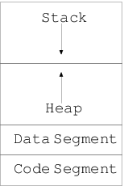

What is I/O? I know you may be wondering what rubbish question? It is input/output. Well, yes you are right. However, i/o can be further categorized in several categories. First of them is console i/o, which is what we are concerned with. In console i/o your keyboard is input device or stdin file stream and display device or monitor is output device or stdout file stream. There is also also something called stderr which is standard error file stream. For historical reasons these are known as FILE, which, happens to be the data type for handling these streams. Then there are more different kind of i/o. In everyday usage you use mouse to handle GUI. Standard C99 does not have anything for mouse. For your hard disk i/o that is real files like our source code files and executable file same FILE stream is used. Network i/o is also there. There is an opengroup which specifies functions for network related functions. Some operating system like GNU/Linux are POSIX compatible which defines how network i/o will be used. Even a printer is a special output device, a camera input, speakers output, microphone input and so on. However, before we go on with i/o I would like to present C’s memory model which will be needed by our discussion of i/o related functions. However, if things do not make sense even then please go through it and come later to understand more.
C programs use RAM as primary memory except when you use register keyword to request compiler to store variables in cpu register. C’s memory model is split into three area at a higher level. Data, Stack and Code Segment. Date is further split in three parts; initialized data segment, uninitialized data segment or BSS which is name after an ancient assembler Block Started by Symbol and heap. Initialized data segment contains initialized global variables and static variables. Here both global and local static variables are counted. For uninitialized data segment it is same as above just that the variables are not initialized explicitly but implicitly to zero. Next is heap. Heap is the largest area of memory used for dynamic memory allocation. As you will see later that you can manage heap using malloc(), calloc(), realloc(), and free(). Note that compiler does not manage memory allocated for you. You, the programmer, are responsible for allocating and freeing up memory in area. If heap gets full os will use virtual memory or swap space on hard disk. Objects allocated on heap persist across function calls. However, there are some very nasty problems, which, come in picture when you use heap. There are several of them. You may forget to allocate memory and want to dereference unallocated pointer. You may have initialized it to NULL and try to dereference that. You may allocate and free twice. You forgot to set pointer to NULL after freeing it. And last but not the least you loose all pointers to the memory area before you can free. The nature with this particular problem is that if your program is going to run for long time then it is going to consume more and more memory. Because of its nature it is known as memory leak. It is very difficult to detect such problems in code which does not run for long periods of time. Our friend valgrind will come to help up with this problem. When a memory leak happens it eats up RAM slowly and then operating system has to use virtual memory as explained above. In a nutshell, I will say that heap means you have to handle it.
Stack is relatively simple. All non-static and non-register variables go on stack. Stack variables do not retain there value across function calls unless they are passed as pointers. Also, when they go out of scope, that is the scope in which they were declared ends, they will be kind of lost. The way in which stack frame moves the same area will be used for new variables. However, stack is very limited (compared to heap) and in deeply nested function calls or recursion (you will see these in Functions chapter) stack may get full and program may crash. The reason for crashing is that operating system will not use virtual memory but will do a segmentation fault in its place. GNU/Linux allow its users to modify the stack size by ulimit command. Note that stack and heap are adjacent in memory and grow in opposite direction.
Code segment or text segment is an area where the executable instructions of program reside. It is typically constant and read-only area unless your system allows self-modifying code. Following diagram shows the memory layout.
In this chapter we will look at only those functions, which, allow us to do console i/o. We will begin with our familiar friends. Can you guess who are they? Yes! They are printf and scanf.
printf is a string based output function that is It writes character strings to stdout. The data which has to be written is formatted by format string as shown previously. After the format specifier it expects as many arguments as specified in format string. The characters which are not like, say %d for example, arecalled ordinary characters. These are simply copied to output stream, which, is stdout for printf. The %d like conversion charcaters are known as conversion specification or format specifiers. Each conversion specification should be augmented with one one argument. The results are undefined if there are insufficient arguments for the format. If extra arguments are given the excess arguments will be evaluated but are otherwise ignored. However, there is a big problem here! There is no type-safety.:-( In general compiler will warn you about it and you, the programmer, are responsible for giving correct format string, correct no. of correct type of arguments. Consider the following program for example:
// printf demo
// Author: Shiv Shankar Dayal
// Description: printf demo
#include <stdio.h>
int main()
{
printf("%d %d\n", 3, 8);
//do not mess it. undefined behavior
printf("%d %d\n", 5);
//extra arguments ignored
printf("%d %d\n", 3, 5, "hello");
//legal because char is integer type
printf("%d\n", 's');
//wrap around of integer as char
printf("%c\n", 836);
//do not mess with type-safety
int i = printf("%d\n", "hello");
prinf("%d\n", i);
return 0;
}
now that if you give the command like clang printf.c then you will be shown following warnings:
printf.c:12:14: warning: more '%' conversions than data arguments [-Wformat]
printf("%d %d\n", 5);
~^
printf.c:15:26: warning: data argument not used by format string [-Wformat-extra-args]
printf("%d %d\n", 3, 5, "hello");
~~~~~~~~~ ^
printf.c:24:19: warning: conversion specifies type 'int' but the argument has type
'char *' [-Wformat]
int i = printf("%d\n", "hello");
~^ ~~~~~~~
%s
3 warnings generated.
Clearly this is not a good sign for any program. A program should compile cleanly. In our case compiler is generating binary even though there are warnings. You can make compiler generate more warnings by issuing a -Wall flag. You can also treat all warnings as errors by passing -Werror to compiler. These two options will ensure that your code has no warnings. Now let us move to output and try to understand it. The output on my system is as given below. It may differ on your system:
3 8
5 8
3 5
115
D
134514119
10
First printf is correct as expected. The second line causes undefined behavior. You may think it is the previous 8 but believe me it is not guaranteed that it will always the case. Ii is UNDEFINED. Third printf is also fine in the sense that extra argument is ignored. Fourth and fifth are normal. Sixth is again a big problem. You are trying to print a decimal integer while argument is a character string. There is no way for compiler to determine that what should be printed which will fit on standards. Now we will have to take a look at all possible format specifier and their meanings. You have seen most of them so this is more for a reference. I have taken following from http://www3.opengroup.org and modified to suit the book. In particular, I have omitted facts related to XSI specification.
Each conversion specification starts with '%' character. After this following appear in sequence:
A field width, or precision, or both, may be indicated by an asterisk(‘*’). In this case an argument of type int supplies the field width or precision. You, the programmer, will have to ensure that arguments specifying field, width or precision, or both appear in that order before the argument, if any to be converted. A negative field width is taken as a ‘-‘ flag followed a positive field width. A negative precision is taken as if the precision were omitted.
The flag characters and their meanings are:
- The result of the conversion will be left-justified within the field. The conversion is right-justified if the flag is not specified.
+ The result of a signed conversion will always begin with a sign (‘+’ or ‘-‘). The conversion will begin with a sign only when a negative value is converted if this value is not specified.
If the first character of a signed conversion is not a sign or if a signed conversion results in no characters, a will be prefixed to the result. This means that if the and ‘+’ flags both appear, the flag will be ignored.
# Specifies that the value is to be converted to an alternative form. For o conversion, it increases the precision (if necessary) to force the first digit of the result to be zero. For x or X conversion specifiers, a non-zero result will have 0x (0X) prefixed to it. For a, A, e, E, f, F, g and G conversion specifiers, the result will always contain a radix character, even if no digits follow the radix character. Without this flag, a radix character appears in the result of these conversions only if a digit follows it.
For 0 and G conversion specifiers, trailing zeros will not be removed from the result as they normally are. For other conversion specifiers the, the behavior is UNDEFINED.
0 For d, i, o, x, X, a, A, e, E, f, F, g and G conversion specifiers, leading zeros (following any indication of sign or base) are used to pad to the field width; no space padding is performed. If the ‘0’ and ‘-‘ flags both appear, the ‘0’ flag is ignored. For d, i, o, u, x and X conversion specifiers, if a precision is specified, the ‘0’ flag is ignored.
The length and their meanings are:
hh Specifies that a following d, i, o, u, x X conversion specifiers applies to a signed char or unsigned char argument (the argument will have been promoted according to integer promotions, but its value will be converted to) signed char or unsigned char before printing; or that a following n conversion specifier applies to a pointer to a signed char argument.
h Specifies that a following d, i, o, u, x and X conversion specifier applies to a short or unsigned short argument (the argument will have been promoted according to the integer promotions, but its value will be converted to short or unsigned short before printing); or that a following n conversion specifier applies to a pointer to a short argument.
l Specifies that a following d, i, o, u, x and X conversion specifier applies to a long or unsigned long argument; that a following n conversion specifier applies to a pointer to a long argument; that a following c conversion specifier applies to a win_t argument; that a following s conversion specifier applies to a wchat_t argument; or has not effect on a following a, A, e, R, f, F, g or G conversion specifier.
ll Specifies that a following d, i, o, u, x and X conversion specifier applies to a long long or unsigned long long argument; that a following n conversion specifier applies to a pointer to a long long argument.
j Specifies that a following d, i, o, u, x and X conversion specifier applies to an intmax_t or uintmax_t argument; or that a following n conversion specifier applies to an intmax_t argument.
z Specifies that a following d, i, o, u, x and X conversion specifier applies to a size_t or the corresponding signed integer type argument; or that a following n conversion specifier applies to a signed integer type corresponding to a size_t argument.
t Specifies that a following d, i, o, u, x and X conversion specifier applies to a ptrdiff_t or the corresponding unsigned int type argument; or that a following n conversion specifier applies to a unsigned integer type corresponding to a ptrdiff_t argument.
L Specifies that a following a, A, e, E, f, F, g and G conversion specifier applies to a long double argument.
If a length modifier appears with any conversion specfier other than as specified above, the behavior is UNDEFINED. You may have noted data types like intmax_t, size_t and ptrdiff_t, which you may not know and I have not told you about them. But do not worry in due course of time we will see them.
The conversion specifiers and their meaning are:
d, i The int argument will be converted to a signed decimal in the style “[-]dddd”. The precision specifies the minimum number of digits to appear; if the value being converted can be converted in fewer digits, it will be expanded with leading zeros. The default precision is 1. The result of converting zero with an explicit precision of zero will be no characters.
o The unsigned argument will be converted to unsigned octal format in the style “dddd”. The precision specifies the minimum number of digits to appear; if the value being converted can be represented in fewer digits, it will be expanded with leading zeros. The default precision is 1. The result of converting zero with an explicit precision of zero will be no characters.
u The unsigned argument will be converted to unsigned decimal format in the style “dddd”. The precision specifies the minimum number of digits to appear; if the value being converted can be represented in fewer digits, it will be expanded with leading zeros. The default precision is 1. The result of converting zero with an explicit precision of zero will be no characters.
x The unsigned argument will be converted to unsigned decimal format in the style “dddd”; the letters “abcdef” are used. The precision specifiers specifies the minimum number of digits to appear; if the value being converted can be represented in fewer digits, it will be expanded with leading zeros. The default precision is 1. The result of converting zero with an explicit precision of zero will be no characters.
X Equivalent to the x conversion specifier, except that letters "ABCDEF" are used instead of "abcdef".
f, F The double argument will be converted to decimal notation in the style “[-]ddd.ddd”, where the number of digits after the radix character is equal to the precision specification. If the precision is missing, it will be taken as 6; if the precision is explicitly zero and no ‘#’ flag is present, no radix character will appear. If a radix character appears, at least one digit appears before it. The low-order digit will be rounded in an implementation-defined manner.
‘ A double argument representing an infinity will be converted in one of the styles “[-]inf” or “[-]infinity” ; which style is implementation-defined. A double argument representing a NaN will be converted in one of the styles “[-]nan(n-char-sequence)” or “[-]nan”; which style, and the meaning of any n-char-sequence, is implementation-defined. The F conversion specifier produces "INF", "INFINITY" or "NAN" instead of "inf", "infinity" or "nan", respectively.
e, E The double argument will be converted in the style “[-]d.ddde[-+]dd”, where there is one digit before the radix character (which is non-zero if the argument is non-zero) and the number of digits after it is equal to the precision; if the precision is missing, it will be taken as 6; if the precision is zero and no ‘#’ flag is present, no radix character will appear. The low-order digit will be rounded in an implementation-defined manner. The E conversion specifier will produce a number with ‘E’ instead of ‘e’ introducing the exponent. The exponent will always contain at least two digits. If the value is zero, the exponent will be zero.
A double argument representing an infinity or NaN will be converted in the style of an f or F conversion specifier.
g, G The double argument will be converted in the style f or e (or in the style F or E in the case of a G conversion specifier), with the precision specifying the number of significant digits. If an explicit precision is zero, it will be taken as 1. The style used depends on the value converted; style e (or E ) will be used only if the exponent resulting from such a conversion is less than -4 or greater than or equal to the precision. Trailing zeros will be removed from the fractional portion of the result; a radix character will appear only if it is followed by a digit or a ‘#’ flag is present.
A double argument representing an infinity or NaN will be converted in the style of an f or F conversion specifier.
a, A A double argument representing a floating-point number will be converted in the style “[-]0xh.hhhhp(+/-)d”, where there is one hexadecimal digit (which will be non-zero if the argument is a normalized floating-point number and is otherwise unspecified) before the decimal-point character and the number of hexadecimal digits after it is equal to the precision; if the precision is missing and FLT_RADIX is a power of 2, then the precision will be sufficient for an exact representation of the value; if the precision is missing and FLT_RADIX is not a power of 2, then the precision will be sufficient to distinguish values of type double, except that trailing zeros may be omitted; if the precision is zero and the ‘#’ flag is not specified, no decimal-point character will appear. The letters "abcdef" will be used for a conversion and the letters "ABCDEF" for A conversion. The A conversion specifier produces a number with ‘X’ and ‘P’ instead of ‘x’ and ‘p’. The exponent will always contain at least one digit, and only as many more digits as necessary to represent the decimal exponent of 2. If the value is zero, the exponent will be zero.
A double argument representing an infinity or NaN will be converted in the style of an f or F conversion specifier.
c The int argument will be converted to an unsigned char, and the resulting byte will be written.
If an l qualifier is present, the wint_t argument will be converted as if by an ls conversion specification with no precision and an argument that points to a two-element array of type wchar_t, the first element of which contains the wint_t argument to the ls conversion specification and the second element contains a null wide character.
s The argument will be a pointer to an array of char. Bytes from the array will be written up to (but not including) any terminating null byte. If the precision is specified, no more than that many bytes will be written. If the precision is not specified or is greater than the size of the array, the programmer will ensure that the array contains a null byte. Note that it is a big problem which causes strcpy to be insecure. What is the char array does not have this null terminating character? We will see a safe implementation of strcpy later. Also, strlen suffers from this problem. Any function relying on null character will suffer from this. If an l qualifier is present, the argument will be a pointer to an array of type wchar_t. Wide characters from the array will be converted to characters (each as if by a call to the wcrtomb() function, with the conversion state described by an mbstate_t object initialized to zero before the first wide character is converted) up to and including a terminating null wide character. The resulting characters will be written up to (but not including) the terminating null character (byte). If no precision is specified, the programmer will ensure that the array contains a null wide character. If a precision is specified, no more than that many characters (bytes) will be written (including shift sequences, if any), and the array will contain a null wide character if, to equal the character sequence length given by the precision, the function would need to access a wide character one past the end of the array. In no case will a partial character be written.
p The argument will be a pointer to void. The value of the pointer is converted to a sequence of printable characters, in an implementation-defined manner.
n The argument will be a pointer to an int into which is written the number of bytes written to the output so far by this call to one of the fprintf() functions. No argument is converted.
% Print a ‘%’ character; no argument is converted. The complete conversion specification will be %%.
If a conversion specification does not match one of the above forms, the behavior is UNDEFINED. If any argument is not the correct type for the corresponding conversion specification, the behavior is undefined. This is what happened to out string in printf.c shown above. In no case will a nonexistent or small field width cause truncation of a field; if the result of a conversion is wider than the field width, the field will be expanded to contain the conversion result. Characters generated by fprintf() and printf() are printed as if fputc() had been called.
For the a and A conversion specifiers, if FLT_RADIX is a power of 2, the value will be correctly rounded to a hexadecimal floating number with the given precision.
For a and A conversions, if FLT_RADIX is not a power of 2 and the result is not exactly representable in the given precision, the result should be one of the two adjacent numbers in hexadecimal floating style with the given precision, with the extra stipulation that the error should have a correct sign for the current rounding direction.
For the e, E, f, F, g and G conversion specifiers, if the number of significant decimal digits is at most DECIMAL_DIG, then the result should be correctly rounded. If the number of significant decimal digits is more than DECIMAL_DIG but the source value is exactly representable with DECIMAL_DIG digits, then the result should be an exact representation with trailing zeros. Otherwise, the source value is bounded by two adjacent decimal strings L < U, both having DECIMAL_DIG significant digits; the value of the resultant decimal string D should satisfy L <= D <= U, with the extra stipulation that the error should have a correct sign for the current rounding direction.
Some of the capitalized words like DECIMAL_DIG, FLT_RADIX etc are macros defined in float.h. You should have a look at it. Now we will have one example and I will show you output but not explain it. Understanding the output is left as an exercise to you, the reader.
// Format Specifiers
// Author: Shiv S. Dayal
/Desciption: It is a demo of several format specifiers
#include<stdio.h>
int main()
{
int i = 343456;
float f = 123;
long double ld = 78939.9347;
printf("% d\n", i);
printf("%+d\n", i);
printf("%#o\n", i);
printf("%#f\n", f);
printf("%-08i\n", i);
printf("%08i\n", i);
printf("%8i\n", i);
printf("%hhi\n", i);
printf("%hi\n", i);
printf("%li\n", i);
printf("%lli\n", i);
printf("%ji\n", i);
printf("%zi\n", i);
printf("%ti\n", i);
printf("%8.8f\n", f);
printf("%8.8Lf\n", ld);
return 0;
}
and the output is:
343456
+343456
01236640
123.000000
343456
00343456
343456
-96
15776
343456
4638355772471066016
4638355772471066016
343456
343456
123.00000000
78939.93470000
I suggest you to read the desciption of conversion specifiers and experiment with various parameters to get different kind of output.
scanf() is sister of printf(). They work in tandem. As its name says scan function it scans stdin or keyboard for input. Its signature is same as that of printf(). It raeds bytes from keyboard input, interprets them according to format string. It also expects a set of pointer arguments as opposed to values for printf(). The pointers indicate where the interpreted data from the input will be stored. The result is UNDEFINED if there are less number of pointer arguments than the number of conversion specifers in format string. Excess arguments will be evaluated but ignored. The format string can have only white-space characters or an ordinary character (neither ‘%’ nor a white-space character) or a conversion specification. Each conversion specification is introduced by ‘%’, after which the following appear in sequence.
A directive composed of one or more white-space characters will be executed by reading input until no more valid input can be read, or up to the first byte which is not a white-space character, which remains unread.
A directive that is an ordinary character will be executed as follows: the next byte will be read from the input and compared with the byte that comprises the directive; if the comparison shows that they are not equivalent, the directive will fail, and the differing and subsequent bytes will remain unread. Similarly, if end-of-file, an encoding error, or a read error prevents a character from being read, the directive will fail.
A directive that is a conversion specification defines a set of matching input sequences, as described below for each conversion character. A conversion specification will be executed in the following steps.
Input white-space characters (as specified by isspace()) will be skipped, unless the conversion specification includes a [, c, C or n conversion specifier.
An item will be read from the input, unless the conversion specification includes an n conversion specifier. An input item will be defined as the longest sequence of input bytes (up to any specified maximum field width, which may be measured in characters or bytes dependent on the conversion specifier) which is an initial subsequence of a matching sequence. The first byte, if any, after the input item will remain unread. If the length of the input item is 0, the execution of the conversion specification will fail; this condition is a matching failure, unless end-of-file, an encoding error, or a read error prevented input from the stream, in which case it is an input failure.
Except in the case of a % conversion specifier, the input item (or, in the case of a %n conversion specification, the count of input bytes) will be converted to a type appropriate to the conversion character. If the input item is not a matching sequence, the execution of the conversion specification fails; this condition is a matching failure. Unless assignment suppression was indicated by a ‘*’, the result of the conversion will be placed in the object pointed to by the first argument following the format argument that has not already received a conversion result if the conversion specification is introduced by %. If this object does not have an appropriate type, or if the result of the conversion cannot be represented in the space provided, the behavior is undefined.
The length modifiers and their meanings are:
hh Specifies that a following d, i, o, u, x, X or n conversion specifier applies to an argument with type pointer to signed char or unsigned char.
h Specifies that a following d, i, o, u, x, X or n conversion specifier applies to an argument with type pointer to short or unsigned short.
l Specifies that a following d, i, o, u, x, X or n conversion specifier applies to an argument with type pointer to long or unsigned long; that a following a, A, e, E, f, F, g or G conversion specifier applies to an argument with type pointer to double; or that a following c, s or [ conversion specifier applies to an argument with type pointer to wchar_t.
l Specifies that a following d, i, o, u, x, X or n conversion specifier applies to an argument with type pointer to long long or unsigned long long.
j Specifies that a following d, i, o, u, x, X or n conversion specifier applies to an argument with type pointer to intmax_t or uintmax_t.
z Specifies that a following d, i, o, u, x, X or n conversion specifier applies to an argument with type pointer to size_t or the corresponding signed int type.
t Specifies that a following d, i, o, u, x, X or n conversion specifier applies to an argument with type pointer to ptrdiff_t or the corresponding unsigned type.
L Specifies that a following d, i, o, u, x, X or n conversion specifier applies to an argument with type pointer to long double.
If a length modifier appears with any conversion specifier other than as specified above, the bahavior is undefined. The following conversion specifiers are valid:
d Matches an optionally signed decimal integer, whose format is the same as expected for the subject sequence of strtol() with the value 10 for the base argument. In the absence of a size modifier, the programmer will ensure that the corresponding argument is a pointer to int.
i Matches an optionally signed integer, whose format is the same as expected for the subject sequence of strtol() with 0 for the base argument. In the absence of a size modifier, the programmer will ensure that the corresponding argument is a pointer to int.
o Matches an optionally signed octal integer, whose format is the same as expected for the subject sequence of strtol() with the value 8 for the base argument. In the absence of a size modifier, the programmer will ensure that the corresponding argument is a pointer to unsigned.
u Matches an optionally signed decimal integer, whose format is the same as expected for the subject sequence of strtol() with the value 10 for the base argument. In the absence of a size modifier, the programmer will ensure that the corresponding argument is a pointer to unsigned.
x Matches an optionally signed decimal integer, whose format is the same as expected for the subject sequence of strtol() with the value 10 for the base argument. In the absence of a size modifier, the programmer will ensure that the corresponding argument is a pointer to unsigned.
a, e, f, g Matches an optionally signed floating-point number, infinity, or NaN, whose format is the same as expected for the subject sequence of strtod(). In the absence of a size modifier, the programmer will ensure that the corresponding argument is a pointer to float.
If the printf() family of functions generates character string representations for infinity and NaN (a symbolic entity encoded in floating-point format) to support IEEE Std 754-1985, the scanf() family of functions will recognize them as input.
s Matches a sequence of bytes that are not white-space characters. The programmer will ensure that the corresponding argument is a pointer to the initial byte of an array (will see them later) of char, signed char or unsigned char large enough to accept the sequence and a terminating null character code, which will be added automatically.
If an l qualifier is present, the input is a sequence of characters that begins in the initial shift state. Each character will be converted to a wide character as if by a call to the mbrtowc() function, with the conversion state described by an mbstate_t object initialized to zero before the first character is converted. The programmer will ensure that the corresponding argument is a pointer to an array of wchar_t large enough to accept the sequence and the terminating null wide character, which will be added automatically.
c Matches a sequence of bytes of the number specified by the field width (1 if no field width is present in the conversion specification). The programmer will ensure that the corresponding argument is a pointer to the initial byte of an array of char, signed char or unsigned char large enough to accept the sequence. No null byte is added. The normal skip over white-space characters will be suppressed in this case.
If an l qualifier is present, the input will be a sequence of characters that begins in the initial shift state. Each character in the sequence is converted to a wide character as if by a call to the mbrtowc() function, with the conversion state described by an mbstate_t object initialized to zero before the first character is converted. The programmer will ensure that the corresponding argument is a pointer to an array of wchar_t large enough to accept the resulting sequence of wide characters. No null wide character is added.
p Matches an implementation-defined set of sequences, which shall be the same as the set of sequences that is produced by the %p conversion specification of the corresponding printf() functions. The application shall ensure that the corresponding argument is a pointer to a pointer to void. The interpretation of the input item is implementation-defined. If the input item is a value converted earlier during the same program execution, the pointer that results will compare equal to that value; otherwise, the behavior of the %p conversion specification is undefined.
[ Matches a non-empty sequence of bytes from a set of expected bytes (the scanset). The normal skip over white-space characters shall be suppressed in this case. The programmer will ensure that the corresponding argument is a pointer to the initial byte of an array of char, signed char or unsigned char large enough to accept the sequence and a terminating null byte, which shall be added automatically.
If an l qualifier is present, the input is a sequence of characters that begins in the initial shift state. Each character in the sequence will be converted to a wide character as if by a call to the mbrtowc() function, with the conversion state described by an mbstate_t object initialized to zero before the first character is converted. The programmer will ensure that the corresponding argument is a pointer to an array of wchar_t large enough to accept the sequence and the terminating null wide character, which will be added automatically.
The conversion specification includes all subsequent bytes in the format string up to and including the matching right square bracket ( ‘]’ ). The bytes between the square brackets (the scanlist) comprise the scanset, unless the byte after the left square bracket is a circumflex ( ‘^’ ), in which case the scanset contains all bytes that do not appear in the scanlist between the circumflex and the right square bracket. If the conversion specification begins with “[]” or “[^]”, the right square bracket is included in the scanlist and the next right square bracket is the matching right square bracket that ends the conversion specification; otherwise, the first right square bracket is the one that ends the conversion specification. If a ‘-‘ is in the scanlist and is not the first character, nor the second where the first character is a ‘^’, nor the last character, the behavior is implementation-defined.
If a conversion specification is invalid, the behavior is undefined.
The conversion specifiers A, E, F, G and X are also valid and shall be equivalent to a, e, f, g and x respectively.
If end-of-file is encountered during input, conversion shall be terminated. If end-of-file occurs before any bytes matching the current conversion specification (except for %n) have been read (other than leading white-space characters, where permitted), execution of the current conversion specification will terminate with an input failure. Otherwise, unless execution of the current conversion specification is terminated with a matching failure, execution of the following conversion specification (if any) will be terminated with an input failure.
Reaching the end of the string in sscanf() shall be equivalent to encountering end-of-file for scanf().
If conversion terminates on a conflicting input, the offending input is left unread in the input. Any trailing white space (including newlines) shall be left unread unless matched by a conversion specification. The success of literal matches and suppressed assignments is only directly determinable via the %n conversion specification.
Time for some code. You have already seen many examples of scanf so I will just explain some concepts here. Consider the following program:
// Author: Shiv S. Dayal
// Description: Demo of string input
#include <stdio.h>
int main()
{
char str[128] = {0};
scanf("%s", str);
printf("You entered:\n%s\n", str);
return 0;
}
and the output is:
Hi! My name is Shiv.
You entered:
Hi!
It is certainly not the corect output. We had expected to see like: “Hi! My name is Shiv.”. What happend to input string after “Hi!”. Well, in a form given above for scanf() it will stop taking input after white-space for character strings. For numerics it does not matter as it does not match the format. For characters it is character-by-character so no confusion either. So what if you want to have the entire string including white-spaces. Use [^n] as given below:
// Author: Shiv S. Dayal
// Description: Corrected demo of string input
#include <stdio.h>
int main()
{
char str[128] = {0};
scanf("%[^\n]s", str);
printf("You entered:\n%s\n", str);
return 0;
}
and the output is:
Hi! My name is Shiv.
You entered:
Hi! My name is Shiv.
What if you want to filter a string based on certain patterns. For example, a charcater string does not contain more that a single space, English alphabets, period and digits. To scan such a string you can define a pttern as program given below shows:
// Author: Shiv. S Dayal
// Description: Demo of []
#include <stdio.h>
int main()
{
char c[100]={0};
scanf("%[ A-Za-z0-9!.]", c);
printf("%s\n", c);
return 0;
}
and the output is:
Hi! My name is Shiv! My phone no. is 1234. %^$&*
Hi! My name is Shiv! My phone no. is 1234.
There is also a major problem associated with input and that comes when you have characters involved. Consider the following program:
// Author: Shiv S. Dayal
// Description: Demo of scanf() function
#include <stdio.h>
int main()
{
int i = 0;
float f = 0.0;
char c1 = '\0';
char c2 = '\0';
char c3 = '\0';
printf("Enter an integer, a float and three character one by one:\n");
scanf("%d", &i);
scanf("%f", &f);
scanf("%c", &c1);
scanf("%c", &c2);
scanf("%c", &c3);
printf("You entered\n");
printf("%d\n", i);
printf("%f\n", f);
printf("%c\n", c1);
printf("%c\n", c2);
printf("%c\n", c3);
return 0;
}
and the output is:
2
3.4
s
You entered
2
3.400000
s
What is happening here is that newline entered by our RET key is getting assigned to c1 and c3. That is why the program accepted only second character. The enter after float f; was assigned to c1 and the character entered to c2 and then the RET newline to c3. There is a very simple way to recover from this:
// Author: Shiv S. Dayal
// Description: Demo of scanf() function
#include <stdio.h>
int main()
{
int i = 0;
float f = 0.0;
char c1 = '\0';
char c2 = '\0';
char c3 = '\0';
printf("Enter an integer, a float and three character one by one:\n");
scanf("%d", &i);
scanf("%f", &f);
scanf(" %c", &c1);
scanf(" %c", &c2);
scanf(" %c", &c3);
printf("%d\n", i);
printf("%f\n", f);
printf("%c\n", c1);
printf("%c\n", c2);
printf("%c\n", c3);
return 0;
}
The whitespace character shown will eat up all the white-space given after the previous input. This concludes our discussion on printf() and scanf(). Now we will move to another set of i/o functions which take character string without filtering and print it to screen without filtering. What I am going to discuss are gets(), fgets(), puts() and fputs().
These functions are very simple compared to printf() and scanf(). They take a pointer to a character array or a character pointer and fill it with input or print it to monitor. Note that gets() and puts() work only with stdin and stdout respectively while fgets() and fputs() work with FILE streams. They can read and write to file streams that is. Here is a sample program:
// Author: Shiv S. Dayal
// Description : Demo of string i/o
#include <stdio.h>
#include <stdlib.h>
int main()
{
char cStack[1024] = "";
char *cHeap = (char*)malloc(sizeof(1024));
gets(cStack);
puts(cStack);
cHeap = fgets(cHeap, 1024, stdin);
fputs(cHeap, stdout);
return 0;
}
and the output is:
Hi!
Hi!
Hello!
Hello!
First "Hi!" and "Hello!" are keyboard inputs. Do not worry about array and pointer syntax at the moment. Just see the difference between function calls. Their is a problem with gets() that it can cause buffer overflow. If input is bigger than 1024 bytes including the null terminator then buffer overflow will happen. Note how you can prevent it with fgets() by specifying the number of characters you want to read. Rest of input will be ignored by fgets(). This is a security hole and therefore you should never ever use gets().
Time for single character input/output.
There are several functions for single character i/o. They are getc(), putc(), getchar(), putchar(), fgetc() and fputc(). Apart from getchar() and putchar() rest can do any FILE stream-based i/o. Let us see them as they are mostly trivial.
// Author: Shiv S. Dayal
// Description: Single character funciton demo
#include<stdio.h>
int main()
{
char c ='';
c = getchar();
putchar(c);
c = getchar();
putchar(c);
c = fgetc(stdin);
fputc(c, stdout);
c = getchar();
putchar(c);
c = getc(stdin);
putc(c, stdout);
return 0;
}
and the output is:
4
4
5
5
6
6
The first 4, 5 and 6 were keyboard inputs. Note the use of extra getchar() and putchar() to handle the situation we faced during scanf().
So we have seen many functions and programs for console i/o. File i/o is still there and will be covered later. This chapter ends here. See you in the next chapter with operators and expressions.:-)
{kind=link}